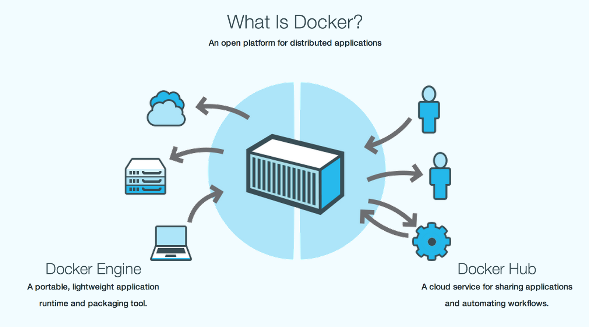

前言
这阵子一直在忙项目，已经有一个多月没有写博客了，有很多关于运维、JavaEE、甚至心灵鸡汤和想法等的东西，想总结写成文章归档却一直都没有时间，写这篇博客也是在大半夜。但是必须要写，因为公司急需一套构建测试环境的机制。
以前觉得项目部署的环境应该有两个，即开发环境和正式环境。但经历了顺丰专送这个项目之后，才明白真的错了，还需要一个测试环境，而 Docker 正是“复制环境”的利器。
为什么需要测试环境？
有这么一个真实画面：我们的测试人员在测试一个小程序的界面，点进去的时候界面一直在 loading，没有数据展现。OK，把这个 BUG 记录下来。过了半分钟，再点进这个界面，正常了，数据出来了。What the …
这个是 BUG 吗？再多试几遍，依然都没有问题。问了一下后端的开发人员，得到结果 ”刚修复了这个BUG“，于是默默把刚记下来的 BUG 划掉 …
以此循环，一直在复测，拼命回归测试，就怕记下来的 BUG 不知不觉又被修复了，所以一天下来几乎什么都没有测出来。
所以我们需要测试环境，保证 QA 测试的时候是稳定的。
Docker 入门
Docker 为开发人员和系统管理员提供了一个可供开发，分发（ship）和运行应用的平台。将 docker 化的应用及其依赖环境不需要经过任何修改就可以分发到任何地方，比如提供给 QA 团队或者分发到云平台中。这是使用 Docker 的一个很重要的目的。
什么是 Docker ？
Docker 的英文本意是码头工人，也就是搬运工，
它提供了一个可以运行你的应用程序的封套（envelope），或者说容器。它原本是 dotCloud 启动的一个业余项目，后来遵从 Apache 2.0 协议开源了，吸引了大量的关注和讨论，再后来 dotCloud 把它重命名为 Docker Inc。它最初是用 Go 语言编写的，它就相当于是加在 LXC（LinuX Containers，linux 容器）上的管道，允许开发者在更高层次的概念上工作。

Docker 扩展了 Linux 容器（Linux Containers），或着说 LXC，通过一个高层次的 API 为进程单独提供了一个轻量级的虚拟环境。Docker 利用了 LXC， cgroups 和 Linux 自己的内核。和传统的虚拟机不同的是，一个 Docker 容器并不包含一个单独的操作系统，而是基于已有的基础设施中操作系统提供的功能来运行的。
容器使用沙箱机制，相互之间不会有任何接口（类似 iPhone 的 app），更重要的是容器性能开销极低。
简单来说，Docker 使软件的传播更加简单，简单从两个方面体现，一是更容易建立，二是共享包含你应用环境配置信息的镜像，应用环境配置也叫做应用操作系统。
应用操作系统是什么？
一般来说，应用程序需要一个特定版本的操作系统，应用服务器，JDK，数据库服务器，还可能需要整合配置文件和其他各种各样的依赖。应用可能需要绑定特定的端口和特定大小的内存。这些运行应用所必须的组件和配置就是所谓的应用操作系统。

当然，可以写一个安装脚本，在脚本中完成下载并安装这些组件的功能。Docker 能够简化这个过程，简化部署多种应用实例工作，比如 Web 应用、后台应用、数据库应用、大数据应用比如 Hadoop 集群、消息队列等等都可以打包成一个 Image（镜像文件）部署。
这些镜像可以被用来创建 Docker containers（容器），容器运行在容器虚拟化平台之上，这个平台由 Docker 提供。
Docker 与 LXC 的区别
这里有一个 Stackoverflow 的答案，里面非常详细清晰地描述了所有 Docker 不同于纯粹的 LXC 的功能特性，简单翻译下就是以下几点：
Docker 提供了一种可移植的配置标准化机制，允许你一致性地在不同的机器上运行同一个 Container。而 LXC 本身可能因为不同机器的不同配置而无法方便地移植运行。
Docker 以 App 为中心，为应用的部署做了很多优化。而 LXC 的帮助脚本主要是聚焦于如何机器启动地更快和耗更少的内存。
Docker 为 App 提供了一种自动化构建机制（Dockerfile），包括打包，基础设施依赖管理和安装等等。
Docker 提供了一种类似 git 的 Container 版本化的机制，允许你对你创建过的容器进行版本管理，依靠这种机制，你还可以下载别人创建的 Container，甚至像 git 那样进行合并。
Docker Container 是可重用的，依赖于版本化机制，你很容易重用别人的 Container（Image），作为基础版本进行扩展。
Docker Container 是可共享的，有点类似 GitHub 一样，Docker 有自己的 INDEX，你可以创建自己的 Docker 用户并上传和下载 Docker Image。
Docker 提供了很多的工具链，形成了一个生态系统。这些工具的目标是自动化、个性化和集成化，包括对 PAAS 平台的支持等。
Docker 会像一个可移植的容器引擎那样工作。它把应用程序及所有程序的依赖环境打包到一个虚拟容器中，这个虚拟容器可以运行在任何一种 Linux 服务器上。这大大地提高了程序运行的灵活性和可移植性，无论需不需要许可、是在公共云还是私密云、是不是裸机环境等等。
Docker 的主要组件是什么？
Docker 有两个主要组件：
- Docker ：开源的容器虚拟化平台
- Docker Hub ：共享和管理 Docker 镜像的 Saas 平台
Docker 采用 Linux Containers 来提供隔离、沙箱、复制、资源限制、快照和其他的一些优势。参考资料： 《Docker: Using Linux Containers to Support Portable Application Deployment》。
镜像是 Docker 的构建组件，是一个只读的应用操作系统模板。
容器是从镜像创建出来的运行状态，是 Docker 的运行组件。容器是可以运行、启动、停止、移动和删除的。
镜像保存的仓库是 Docker 的分发组件，可以选择公开的 Docker Hub（国外的，超级慢），也可以选择搭建私有的 Registry。
Docker 是怎么工作的？
Docker 按启动顺序包含两个部分：
- Daemon（服务端）：运行在 host machine（宿主机） 上，承担创建、运行和分发 Docker 容器等重要工作。
- Client（客户端）：Docker 二进制程序，负责接收用户的命令以及和服务端进行通信。
客户端可以和服务端运行在一台主机上，也可以在不同的主机上。
服务端需要用 pull 命令从仓库中拉一个镜像下来。服务端可以从 Docker Hub 或者其他配置的仓库中下载镜像。服务端主机可以从仓库中下载和安装多个镜像。
客户端用 run 命令 来启动容器。客户端与服务端通过 socket 或者 REST API 进行通信。
Docker 的安装
在 CentOS 中安装 Docker:
|
|
在 Ubuntu/Debian 中安装 Docker:
|
|
其它操作系统的安装可以查看官方文档。
Docker 的使用
下载镜像
在了解了 Image 和 Container 的概念后，我们可以开始下载一个 Image，Docker 的好处就是提供了一个类似github 的 Image 仓库管理，可以非常方便 pull 别人的 Image 下来运行。
例如，我们可以下载一个 CentOS Image：
|
|
这里 centos6是一个 tag，类似于 Git 的 tag，可以通过它来确定下载的 CentOS 的版本。下载完成后，执行 docker images 命令来列出你已经下载的 images：
|
|
运行容器
我们通过命令行来运行一个容器，命令很简单，例如我们想执行一个 shell 终端：
|
|
默认情况下，docker 容器是不提供交互 shell 的，也不提供标准输入。可以指定 -i 选项来提供交互，指定 -t 选项来分配一个伪终端。
在 Shell 中你可以做你想做的任意操作，安装软件，编写程序，运行命令等。
参考我之前写的，《Centos 6 x86 minimal 部署》，推荐使用 Oneinstack 脚本，10分钟左右自动搭建一套服务端环境。
退出容器
最直接的退出命令 exit、ctrl+c，会使容器停止。
如果想要只退出容器的终端，但不停止容器，可以使用组合快捷键：
先按 ctrl+p，再按 ctrl+q。
进入运行中的容器
docker attach
|
|
注意：使用 attach 进入后台运行中的容器后，如果退出容器终端使用了 exit，则会导致容器的停止。如果想容器不停止，则需要使用 ctrl+p，再按 ctrl+q 的组合快捷键。
docker exec
|
|
相对比 attach，使用 exec 进入容器后，再使用 exit 退出容器终端，不会导致容器的停止。
注意：使用 exec 执行后，会命令执行返回值。如果命令需要长时间执行，而不使用 -d，执行 exec 后会卡住，一直等命令执行完成。
停止容器
stop
使用 stop 停止容器
|
|
kill
也可以使用 kill 杀掉一个运行中的容器
|
|
删除容器
|
|
OPTIONS 说明：
-f: 通过 SIGKILL 信号强制删除一个运行中的容器-l: 移除容器间的网络连接，而非容器本身-v: -v 删除与容器关联的卷
保存镜像
在容器里搭建完环境后，想要保存作为新的镜像，先退出容器的终端，然后执行 ps 命令查看容器 ID
|
|
然后用 commit 命令将 Container 提交成 Image
|
|
容器提交后，执行 docker images 就可以看到刚才提交的容器
|
|
以后就可以很方便地 run dankal/sftc 创建相同环境的容器，不需要再手动搭建环境了。
Docker 端口映射
我们在宿主机已经构建完容器，但我们没办法在外网直接访问到容器。这时候需要做端口映射，通过访问宿主机来转发到容器。
反向代理
依然参考我之前写的，《Centos 6 x86 minimal 部署》，修改 iptables，开放几个端口如6666、8888等，然后创建虚拟主机，绑定域名。最后修改 nginx -> conf -> vhost 下，修改对应域名的配置文件。
把默认生成的 location 匹配都注释掉：
|
|
把原本转发给 Tomcat(JAVA环境作为参考) 的 8080 端口改为 iptables 中开放的接口（eg. 8888）
|
|
docker 端口映射
|
|
-p 8888:80 : 将容器的80端口映射到主机的8888端口（与上面的反向代理的端口号一致）。
这样设置后，访问宿主机的8888端口就可以访问到容器的80端口，可以测试一下：
|
|
正常情况下会访问到容器的80端口，并打印出容器 web 默认目录（/data/wwwroot/default）下的 index.html 中的内容。
如果出现异常，则需要一步步排查问题，最有可能的是容器内的 web 服务没有启动，可以进入容器，检查一下 nginx、tomcat 等 web 服务器和容器的状态，或者直接 restart 即可。
而把容器的3306端口映射到宿主机的6666端口，就可以通过绑定的域名和6666端口，访问容器里的 MySQL 数据库。
还需要映射什么端口根据需求去配置即可。
项目部署
最后的最后，只要把项目部署在容器里就完成了。作为运维相信这根本就不是什么问题了。比如说 JavaEE 项目，把项目的 war 包部署到 /data/wwwroot/ 下对应域名的文件夹里，就可以通过域名访问容器里的项目了。
PHP-fpm、Node.js 什么的就不说啦。
补充
理论上来说，一台服务器有65536个端口号，就算一个环境需要映射10个端口，那也可以构建6000个容器。实际上还得看带宽、硬盘容量等的配置，但也已经足够应付几十个项目的环境构建了。这种虚拟化技术简直不能太爽，有一种一台云主机 ECS 被分成了 N 台 VPS 的体验。
关于项目的环境，在 Docker 的帮助下，开发环境、测试环境、生产环境都可以部署在同一台服务器上，数据不共通，但配置完全相同。并且，如果要迁移服务器，将是直接复制粘贴的操作，几秒钟就可以完成。
迭代版本号：测试环境 > 生产环境 (开发环境不打tag)
版本稳定性：生产环境 > 测试环境 > 开发环境
关于版本迭代流程控制：
- 后端每开发完一个模块或者完成一个功能甚至只修了一个BUG，都要将代码更新到
dev分支，部署到开发环境。 - 前端一般情况下，接开发环境的API。
- 前端完成某个模块，需要进行测试，后端就发布一个测试版本到
test分支，打上tag，eg.v0.3.TEST，部署到测试环境。 - 前端切换到测试环境的 API，发布前端测试版本。
- QA 拿到前端测试版本，开始测试。
- 前端切回测试环境，前后端继续开发。
- QA 测试通过。
- 后端将测试环境的代码发布到
master分支，打上tag，eg.v0.3.RELEASE, 部署到生产环境。 - …
- 前端接生产环境的API。
- 项目完成。
TODO
- Docker + Git + Jenkins 持续构建部署
- 构建容器集群